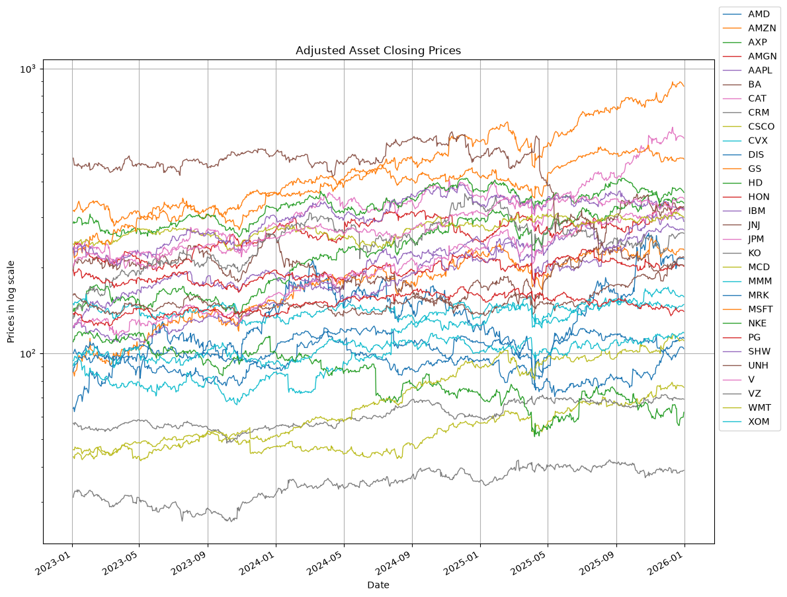
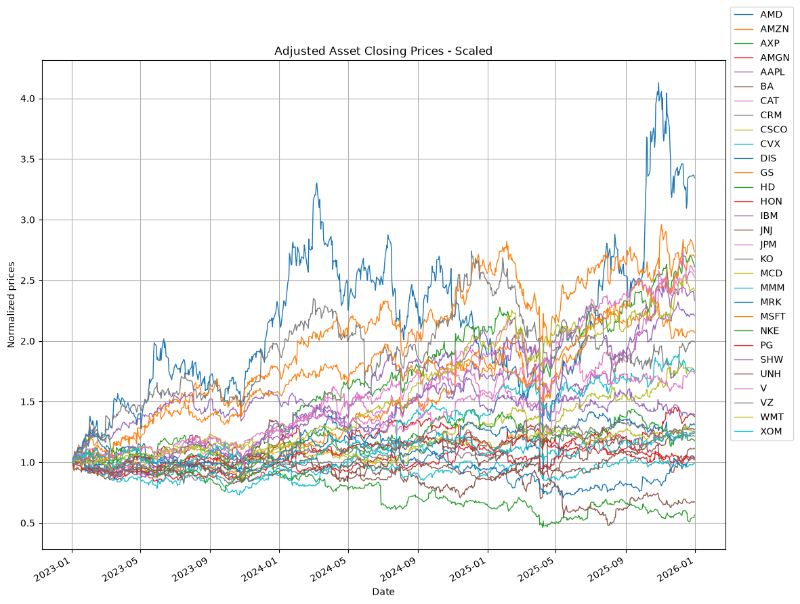
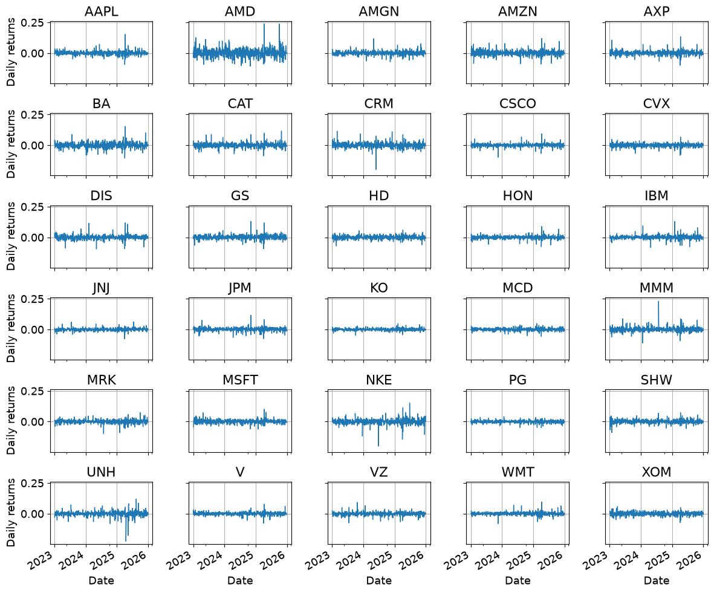
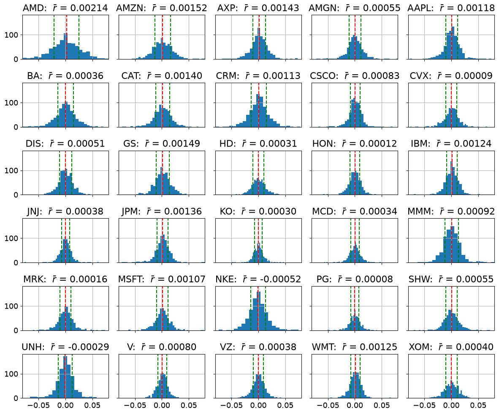
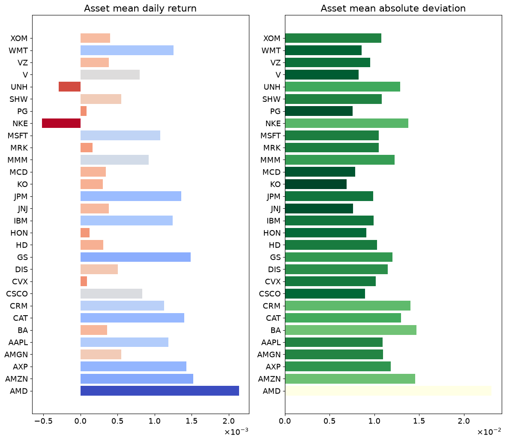
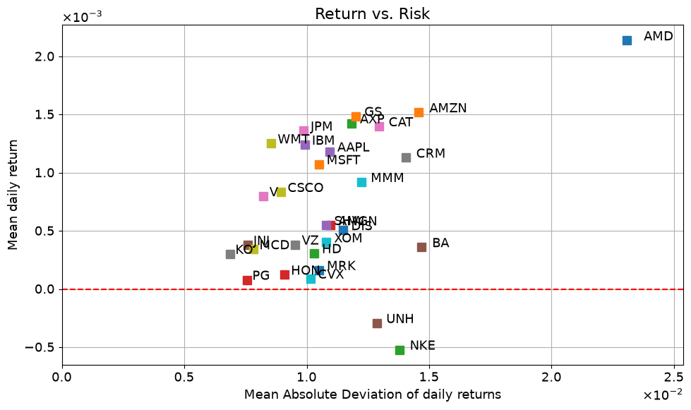
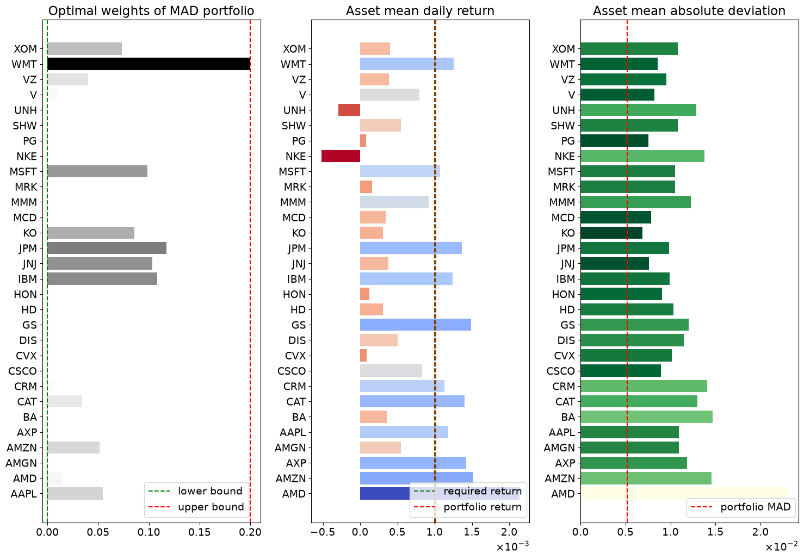
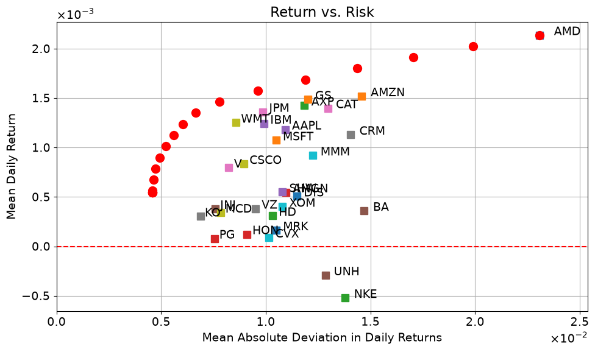
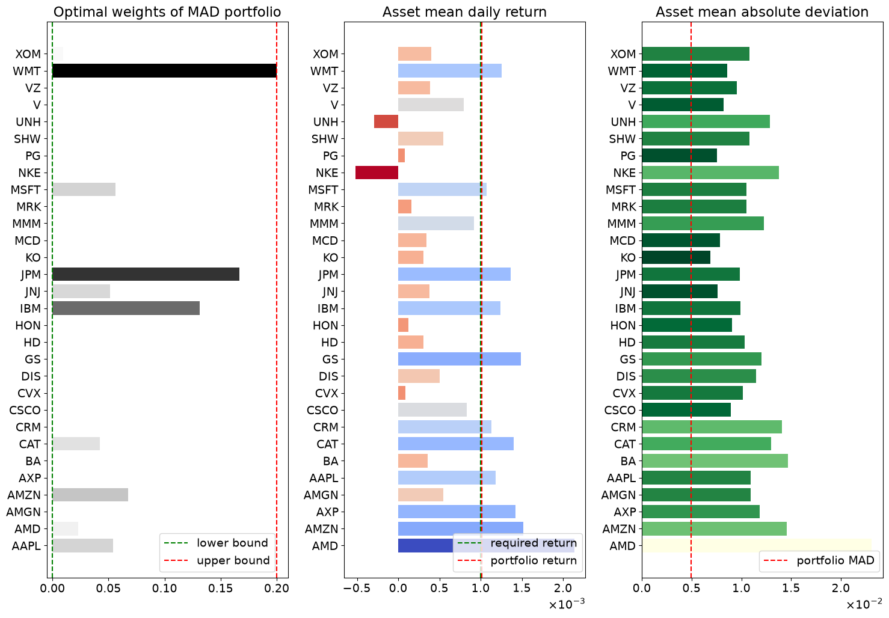
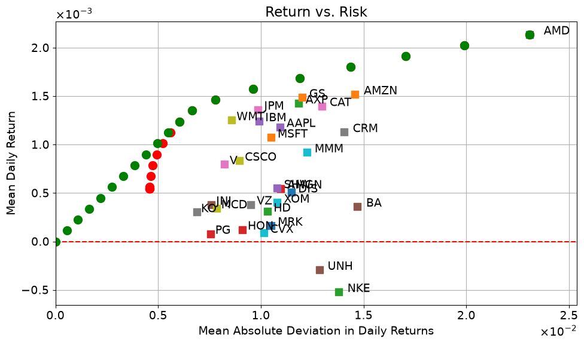

2.3 Mean Absolute Deviation (MAD) portfolio optimization#
Portfolio optimization and modern portfolio theory has a long and important history in finance and investment. The principal idea is to find a blend of investments in financial securities that achieves an optimal trade-off between financial risk and return. The introduction of modern portfolio theory is generally attributed to the 1952 doctoral thesis of Harry Markowitz who subsequently was award a share of the 1990 Nobel Memorial Prize in Economics for his fundamental contributions to this field. The well-known “Markowitz Model” models measure risk using covariance of the portfolio with respect to constituent assets, then solves a minimum variance problem by quadratic optimization problem subject to constraints to allocate of wealth among assets.
In a remarkable 1991 paper, Konno and Yamazaki proposed a different approach using the mean absolute deviation (MAD) in portfolio return as a measure of financial risk. The proposed implementation directly incorporates historical price data into a large scale linear optimization problem.
Preamble: Install Pyomo, a solver and the data reader#
On Google Colab, the following cell installs Pyomo, HiGHS and yfinance in the notebook’s Python environment. For a local Jupyter installation, run %pip install pyomo highspy yfinance once in that environment before running this notebook. There is no need to mount Google Drive or create a data directory.
We use the same HiGHS interface as the other notebooks in this chapter. The availability check confirms that the solver can be found; later cells check each solve before using its solution.
import sys
if 'google.colab' in sys.modules:
%pip install -q pyomo highspy yfinance
solver = 'appsi_highs'
import pyomo.environ as pyo
SOLVER = pyo.SolverFactory(solver)
assert SOLVER.available(), f"Solver {solver} is not available."
Reading historical prices#
The yfinance package reads historical prices from Yahoo Finance. Internet access is needed for a download, and availability and historical adjustments can change. A saved notebook contains the results of its recorded run; a later download can give different results even with the same dates. These data serve an educational example, rather than an investment recommendation.
from datetime import date, datetime, timedelta, timezone
from pathlib import Path
import matplotlib.dates as mdates
import matplotlib.pyplot as plt
import numpy as np
import pandas as pd
import yfinance as yf
Download adjusted closing prices#
We request daily adjusted closing prices, which account for stock splits and dividends. In yfinance.download, auto_adjust=False retains the Adj Close field that we select explicitly. The start date is inclusive and the end date is exclusive.
The worked example uses the three complete calendar years 2023–2025. Set USE_CURRENT_WINDOW = True below to explore a moving three-year window instead. The cell prints the requested and returned dates and the retrieval time so that we can identify the data behind the results.
All assets must have positive, finite prices on the same ordered trading dates, with at least 60 observations for this example. We stop if any requested price is missing: no dates are dropped and no prices are filled. In particular, filling an early gap with a later price would use information from the future. If a check fails, inspect the named tickers and dates, retry a failed download, or explicitly choose another window or set of assets before continuing. These checks detect incomplete returned data; they do not certify the provider’s market calendar or the accuracy of its prices.
def validate_prices(prices, tickers, start, end, min_observations=60):
"""Check the common price table before calculating returns; never fill gaps."""
if not tickers or len(tickers) != len(set(tickers)):
raise ValueError("Request a nonempty list of distinct tickers.")
if not isinstance(prices, pd.DataFrame) or prices.empty:
raise ValueError("No prices returned. Check the dates, tickers and connection.")
if prices.columns.has_duplicates:
raise ValueError("The price table has duplicate ticker columns.")
missing = sorted(set(tickers) - set(prices.columns))
if missing:
raise ValueError(f"Missing requested tickers: {missing}")
if not isinstance(prices.index, pd.DatetimeIndex) or prices.index.hasnans:
raise ValueError("Prices need valid trading dates as a DatetimeIndex.")
if prices.index.has_duplicates or not prices.index.is_monotonic_increasing:
raise ValueError("Trading dates must be unique and in increasing order.")
if prices.index.tz is not None:
raise ValueError("Use daily trading dates without a time zone.")
if not (pd.Timestamp(start) <= prices.index.min()
<= prices.index.max() < pd.Timestamp(end)):
raise ValueError("Prices fall outside the requested [start, end) window.")
if len(prices) < min_observations:
raise ValueError(f"Need at least {min_observations} price observations; "
f"received {len(prices)}. Choose a longer window.")
try:
prices = prices.loc[:, tickers].astype(float).copy()
except (TypeError, ValueError) as exc:
raise ValueError("Every requested price must be numeric.") from exc
invalid = ~np.isfinite(prices) | (prices <= 0)
if invalid.to_numpy().any():
counts = invalid.sum()
dates = prices.index[invalid.any(axis=1)].strftime('%Y-%m-%d').tolist()
raise ValueError(f"Missing or invalid prices by ticker: "
f"{counts[counts > 0].to_dict()}; "
f"first affected dates: {dates[:5]}. No gaps were filled.")
return prices
def download_prices(tickers, start, end):
"""Download adjusted closes into memory and validate the result."""
raw = yf.download(tickers, start=start, end=end, progress=False,
auto_adjust=False, keepna=True, threads=False,
group_by='column', multi_level_index=True)
if raw is None or raw.empty or 'Adj Close' not in raw.columns:
raise ValueError("No adjusted closing prices returned. Check the "
"connection, dates and tickers, then retry.")
return validate_prices(raw['Adj Close'], tickers, start, end)
tickers = [
"AMD",
"AMZN",
"AXP",
"AMGN",
"AAPL",
"BA",
"CAT",
"CRM",
"CSCO",
"CVX",
"DIS",
"GS",
"HD",
"HON",
"IBM",
"JNJ",
"JPM",
"KO",
"MCD",
"MMM",
"MRK",
"MSFT",
"NKE",
"PG",
"SHW",
"UNH",
"V",
"VZ",
"WMT",
"XOM",
]
USE_CURRENT_WINDOW = False
start_date, end_date = date(2023, 1, 1), date(2026, 1, 1)
if USE_CURRENT_WINDOW:
end_date = date.today()
start_date = end_date - timedelta(days=3 * 365)
# Optional: set this to your own CSV exported from a previous validated run.
PRICE_CSV = None
if PRICE_CSV is None:
assets = download_prices(tickers, start_date, end_date)
retrieved_at = datetime.now(timezone.utc).isoformat(timespec='seconds')
source_note = f"Yahoo Finance via yfinance {yf.__version__}; retrieved {retrieved_at}"
else:
prices = pd.read_csv(Path(PRICE_CSV), index_col=0, parse_dates=True)
assets = validate_prices(prices, tickers, start_date, end_date)
source_note = "User-owned CSV; original retrieval time and adjustments not verified"
print(source_note)
print(f"Requested window: {start_date} <= date < {end_date}")
print(f"Returned window: {assets.index[0].date()} to {assets.index[-1].date()}")
print(f"Tickers ({len(assets.columns)}): {', '.join(assets.columns)}")
print("Price field: Adj Close; download setting: auto_adjust=False")
print(f"Observations: {len(assets)} prices, {len(assets) - 1} daily returns per asset")
print("Missing-data policy: stop on any invalid price; 0 rows dropped, 0 values filled")
Yahoo Finance via yfinance 1.7.0; retrieved 2026-09-13T13:45:42+00:00
Requested window: 2023-01-01 <= date < 2026-01-01
Returned window: 2023-01-03 to 2025-12-31
Tickers (30): AMD, AMZN, AXP, AMGN, AAPL, BA, CAT, CRM, CSCO, CVX, DIS, GS, HD, HON, IBM, JNJ, JPM, KO, MCD, MMM, MRK, MSFT, NKE, PG, SHW, UNH, V, VZ, WMT, XOM
Price field: Adj Close; download setting: auto_adjust=False
Observations: 752 prices, 751 daily returns per asset
Missing-data policy: stop on any invalid price; 0 rows dropped, 0 values filled
The default run keeps the price table in memory. To repeat an analysis with your own copy, optionally run assets.to_csv("mad-adjusted-close.csv"), then set PRICE_CSV to that file on a later run with the same tickers and requested dates. On Colab, download the file to your computer before the session ends and upload it when needed; Drive is optional. Keep the printed provenance alongside the file, and use a CSV of adjusted closes exported by this workflow, not unadjusted prices. Importing a file checks its shape and values but cannot verify its provenance. Check the data provider’s terms before sharing a snapshot or adding one to a public repository.
We now plot the validated price table.
fig, ax = plt.subplots(figsize=(12, 9))
assets.plot(ax=ax, logy=True, grid=True, lw=1, title="Adjusted Asset Closing Prices")
ax.legend(bbox_to_anchor=(1.0, 1.12))
ax.set_ylabel("Prices in log scale")
plt.tight_layout()
plt.show()

Analysis of historical asset prices#
Scaled asset prices#
The historical prices are scaled to a value to have unit value at the start of the historical period. Scaling facilitates plotting and subsequent calculations while preserving arithmetic and logarithmic returns needed for analysis.
assets_scaled = assets.div(assets.iloc[0])
fig, ax = plt.subplots(figsize=(12, 9))
assets_scaled.plot(
ax=ax, grid=True, lw=1, title="Adjusted Asset Closing Prices - Scaled"
)
ax.legend(bbox_to_anchor=(1.0, 1.12))
ax.set_ylabel("Normalized prices")
plt.rcParams["font.size"] = 13
plt.tight_layout()
plt.show()

Statistics of daily returns#
The scaled price of asset \(j\) on trading day \(t\) is designated \(S_{j, i}\). The daily return is computed as
where \(t = 1, \dots, T\). The mean return for asset \(j\) is
The following cells compute and display the daily returns for all assets and displays as time series and histograms.
daily_returns = assets.diff()[1:] / assets.shift(1)[1:]
fig, ax = plt.subplots(6, 5, figsize=(12, 10), sharex=True, sharey=True)
for a, s in zip(ax.flatten(), sorted(daily_returns.columns)):
daily_returns[s].plot(ax=a, lw=1, title=s, grid=True)
a.xaxis.set_major_locator(mdates.YearLocator())
a.xaxis.set_major_formatter(mdates.DateFormatter("%Y"))
a.set_ylabel("Daily returns")
plt.tight_layout()
plt.show()

Mean Absolute Deviation#
The mean absolute deviation \(\Delta_j\) for asset \(j\) is
where \(T\) is the period under consideration. We now calculate the mean daily return and the mean absolute deviation in daily returns for all assets and display the distributions of daily returns for all assets. For each asset, we depict the mean return \(\bar{r}\) (in red) and the interval \([\bar{r}-\Delta,\bar{r}+\Delta]\) whose size corresponds to its mean absolute deviation (in green).
mean_return = daily_returns.mean()
mean_absolute_deviation = abs(daily_returns - mean_return).mean()
fig, ax = plt.subplots(6, 5, figsize=(12, 10), sharex=True, sharey=True)
ax = ax.flatten()
for a, s in zip(ax.flatten(), daily_returns.columns):
daily_returns[s].hist(ax=a, lw=1, grid=True, bins=50)
a.set_title(f"{s}: $\\bar r$ = {mean_return[s]:0.5f}")
a.set_xlim(-0.08, 0.08)
a.axvline(mean_return[s], color="r", linestyle="--")
a.axvline(mean_return[s] + mean_absolute_deviation[s], color="g", linestyle="--")
a.axvline(mean_return[s] - mean_absolute_deviation[s], color="g", linestyle="--")
plt.tight_layout()
plt.show()

The mean daily return and the mean absolute deviation in daily returns are plotted as bar charts in the following cell. The side by side comparison provides a comparison of return vs. volatility for individual assets.
from matplotlib.ticker import ScalarFormatter
def gradient_barplot(ax, data, color_map):
min_val = data.min()
max_val = data.max()
range_val = max_val - min_val
for i, val in enumerate(data):
normalized_val = (val - min_val) / range_val
color = color_map(normalized_val)
ax.barh(i, val, color=color)
fig, ax = plt.subplots(1, 2, figsize=(12, 0.35 * len(daily_returns.columns)))
# Choose the color maps
color_map2 = plt.get_cmap("coolwarm").reversed()
color_map3 = plt.get_cmap("YlGn").reversed()
# Asset mean daily return
gradient_barplot(ax[0], mean_return, color_map2)
ax[0].set_title("Asset mean daily return")
ax[0].set_yticks(np.arange(len(mean_return)))
ax[0].set_yticklabels(mean_return.index)
formatter = ScalarFormatter(useMathText=True)
formatter.set_scientific(True)
formatter.set_powerlimits((-1, 1))
ax[0].xaxis.set_major_formatter(formatter)
# Asset mean absolute deviation
gradient_barplot(ax[1], mean_absolute_deviation, color_map3)
ax[1].set_title("Asset mean absolute deviation")
ax[1].set_yticks(np.arange(len(mean_absolute_deviation)))
ax[1].set_yticklabels(mean_absolute_deviation.index)
formatter = ScalarFormatter(useMathText=True)
formatter.set_scientific(True)
formatter.set_powerlimits((-1, 1))
ax[1].xaxis.set_major_formatter(formatter)
plt.tight_layout()
plt.show()

We now plot the mean return and mean absolute deviation for all assets using a scatter plot. The scatter plot provides a visual comparison of the trade-off between return and volatility for individual assets.
fig, ax = plt.subplots(1, 1, figsize=(10, 6))
for s in assets.keys():
ax.plot(mean_absolute_deviation[s], mean_return[s], "s", ms=8)
ax.text(mean_absolute_deviation[s] * 1.03, mean_return[s], s)
formatterx = ScalarFormatter(useMathText=True)
formatterx.set_scientific(True)
formatterx.set_powerlimits((-1, 1))
ax.xaxis.set_major_formatter(formatterx)
formattery = ScalarFormatter(useMathText=True)
formattery.set_scientific(True)
formattery.set_powerlimits((-1, 1))
ax.yaxis.set_major_formatter(formattery)
ax.set_xlim(0, 1.1 * mean_absolute_deviation.max())
ax.axhline(0, color="r", linestyle="--")
ax.set_title("Return vs. Risk")
ax.set_xlabel("Mean Absolute Deviation of daily returns")
ax.set_ylabel("Mean daily return")
ax.grid(True)
plt.tight_layout()
plt.show()

Analysis of a portfolio of assets#
Return on a portfolio#
Given a portfolio with value \(W_t\) at time \(t\), return on the portfolio at \(t_{t +\delta t}\) is defined as
For the period from \([t, t+\delta t)\) we assume there are \(n_{j,t}\) shares of asset \(j\) with a starting value of \(S_{j,t}\) per share. The initial and final values of the portfolio are then
The return of the portfolio is given by
where \(r_{j,t+\delta t}\) is the return on asset \(j\) at time \(t+\delta t\).
Defining \(W_{j,t} = n_{j,t}S_{j,t}\) as the wealth invested in asset \(j\) at time \(t\), then \(w_{j,t} = n_{j,t}S_{j,t}/W_{t}\) is the fraction of total wealth invested in asset \(j\) at time \(t\). The return on a portfolio of \(J\) assets is then given by
on a single interval extending from \(t\) to \(t + \delta t\).
Mean Absolute Deviation (MAD) portfolio optimization#
The portfolio optimization problem is to find an allocation of investments weights \(w_j\) to minimize the portfolio measure of risk subject to constraints on required return and any other constraints that an investor wishes to impose. Assume that we can make investment decisions on every trading day \(t\) over a fixed time horizon ranging from \(t=1,\dots,T\) and that there is a set of \(J\) assets in which we can choose to invest.
If we want to have a guaranteed minimum portfolio return \(R\), but at the same time minimize risk, we could choose to have the mean absolute deviation (MAD) in portfolio returns as the objective function. More specifically, we can consider the return on a portfolio of \(J\) assets over a period of \(T\) intervals with weights \(w_j\) for asset \(j\) given by
where \(r_{t, j}\) is the return on asset \(j\) at time \(t\), \(\bar{r}_j\) is the mean return for asset \(j\), and \(w_j\) is the fraction of the total portfolio that is invested in asset \(j\). Note that due to the use of absolute values, the MAD for the portfolio is not the weighted sum of the MADs for individual assets.
The resulting Mean Absolute Deviation (MAD) portfolio optimization problem then is
where \(R\) is the minimum required portfolio return. The lower bound \(w_j \geq 0\) is a “no short sales” constraint. The upper bound \(w_j \leq w^{ub}_j\) enforces a required level of diversification in the portfolio.
Defining two sets of auxiliary variables \(u_t \geq 0\) and \(v_t \geq 0\) for every \(t=1,\dots,T\), leads to a reformulation of the problem as a linear optimization:
Pyomo model#
The following cells check optimal termination before reporting or plotting a solution. The required return and weight limits below apply to the worked data window. When choosing other data or bounds, a required return may be infeasible; inspect the solver message and choose a feasible target before proceeding.
import pyomo.environ as pyo
def mad_portfolio(assets):
daily_returns = assets.diff()[1:] / assets.shift(1)[1:]
mean_return = daily_returns.mean()
m = pyo.ConcreteModel("MAD portfolio optimization")
m.R = pyo.Param(mutable=True, default=0)
m.w_lb = pyo.Param(mutable=True, default=0)
m.w_ub = pyo.Param(mutable=True, default=1.0)
m.ASSETS = pyo.Set(initialize=assets.columns)
m.TIME = pyo.RangeSet(len(daily_returns.index))
m.w = pyo.Var(m.ASSETS)
m.u = pyo.Var(m.TIME, domain=pyo.NonNegativeReals)
m.v = pyo.Var(m.TIME, domain=pyo.NonNegativeReals)
@m.Objective(sense=pyo.minimize)
def MAD(m):
return sum(m.u[t] + m.v[t] for t in m.TIME) / len(m.TIME)
@m.Constraint(m.TIME)
def portfolio_returns(m, t):
date = daily_returns.index[t - 1]
return m.u[t] - m.v[t] == sum(
m.w[j] * (daily_returns.loc[date, j] - mean_return[j]) for j in m.ASSETS
)
@m.Constraint()
def sum_of_weights(m):
return sum(m.w[j] for j in m.ASSETS) == 1
@m.Constraint()
def mean_portfolio_return(m):
return sum(m.w[j] * mean_return[j] for j in m.ASSETS) >= m.R
@m.Constraint(m.ASSETS)
def no_short(m, j):
return m.w[j] >= m.w_lb
@m.Constraint(m.ASSETS)
def diversify(m, j):
return m.w[j] <= m.w_ub
return m
m = mad_portfolio(assets)
m.w_lb = 0
m.w_ub = 0.2
m.R = 0.001
results = SOLVER.solve(m)
pyo.assert_optimal_termination(results)
print(f"Weight lower bound {m.w_lb():0.3f}")
print(f"Weight upper bound {m.w_ub():0.3f}")
print(
f"Optimal weights: {[round(m.w[j](), 3) if round(m.w[j](), 3) != 0 else 0 for j in m.ASSETS]}"
)
print(f"Fraction of portfolio invested {m.sum_of_weights():0.3f}")
print(f"Required portfolio daily return {m.R():0.3f}")
print(f"Portfolio mean daily return {m.mean_portfolio_return():0.3f}")
print(f"Portfolio mean absolute deviation {m.MAD():0.5f}")
Weight lower bound 0.000
Weight upper bound 0.200
Optimal weights: [0.015, 0.051, 0, 0, 0.055, 0, 0.034, 0.008, 0, 0, 0, 0, 0, 0, 0.108, 0.103, 0.117, 0.086, 0, 0, 0, 0.099, 0, 0, 0, 0, 0.009, 0.04, 0.2, 0.073]
Fraction of portfolio invested 1.000
Required portfolio daily return 0.001
Portfolio mean daily return 0.001
Portfolio mean absolute deviation 0.00520
def mad_visualization(assets, m):
daily_returns = assets.diff()[1:] / assets.shift(1)[1:]
mean_return = daily_returns.mean()
mean_absolute_deviation = abs(daily_returns - mean_return).mean()
mad_portfolio_weights = pd.DataFrame(
[m.w[j]() for j in sorted(m.ASSETS)], index=sorted(m.ASSETS)
)
plt.rcParams["font.size"] = 14
fig, ax = plt.subplots(1, 3, figsize=(15, 0.35 * len(daily_returns.columns)))
# Choose the color maps
color_map1 = plt.get_cmap("Greys")
color_map2 = plt.get_cmap("coolwarm").reversed()
color_map3 = plt.get_cmap("YlGn").reversed()
# MAD Portfolio Optimal Weights
gradient_barplot(ax[0], mad_portfolio_weights[0], color_map1)
ax[0].set_title("Optimal weights of MAD portfolio")
ax[0].set_yticks(np.arange(len(mad_portfolio_weights)))
ax[0].set_yticklabels(mad_portfolio_weights.index)
ax[0].axvline(m.w_lb(), ls="--", color="g")
ax[0].axvline(m.w_ub(), ls="--", color="r")
ax[0].legend(
["lower bound", "upper bound"], bbox_to_anchor=(0.97, 0), loc="lower right"
)
ax[0].set_xlim(-0.005, 0.21)
# Asset mean daily return
gradient_barplot(ax[1], mean_return, color_map2)
ax[1].set_title("Asset mean daily return")
ax[1].set_yticks(np.arange(len(mean_return)))
ax[1].set_yticklabels(mean_return.index)
ax[1].axvline(m.R(), ls="--", color="g")
ax[1].axvline(m.mean_portfolio_return() + 0.000015, ls="--", color="r")
ax[1].legend(
["required return", "portfolio return"],
bbox_to_anchor=(1.01, 0),
loc="lower right",
)
# Formatter
formatter = ScalarFormatter(useMathText=True)
formatter.set_scientific(True)
formatter.set_powerlimits((-1, 1))
ax[1].xaxis.set_major_formatter(formatter)
# Asset mean absolute deviation
gradient_barplot(ax[2], mean_absolute_deviation, color_map3)
ax[2].set_title("Asset mean absolute deviation")
ax[2].set_yticks(np.arange(len(mean_absolute_deviation)))
ax[2].set_yticklabels(mean_absolute_deviation.index)
ax[2].axvline(m.MAD(), ls="--", color="r")
ax[2].legend(["portfolio MAD"], bbox_to_anchor=(1.01, 0), loc="lower right")
# Formatter
formatter = ScalarFormatter(useMathText=True)
formatter.set_scientific(True)
formatter.set_powerlimits((-1, 1))
ax[2].xaxis.set_major_formatter(formatter)
plt.tight_layout()
plt.show()
mad_visualization(assets, m)

MAD risk versus return#
The portfolio optimization problem has been formulated as the minimization of a risk measure, MAD, subject to a lower bound \(R\) on mean portfolio return. Increasing the required return for the portfolio therefore comes at the cost of tolerating a higher level of risk. Finding the optimal trade off between risk and return is a central aspect of any investment strategy.
The following cell creates a plot of the risk/return trade off by solving the MAD portfolio optimization problem for increasing values of required return \(R\). This should be compared to the similar construction commonly used in presentations of the portfolio optimization problem due to Markowitz.
fig, ax = plt.subplots(1, 1, figsize=(10, 6))
for s in assets.keys():
ax.plot(mean_absolute_deviation[s], mean_return[s], "s", ms=8)
ax.text(mean_absolute_deviation[s] * 1.03, mean_return[s], s)
formatterx = ScalarFormatter(useMathText=True)
formatterx.set_scientific(True)
formatterx.set_powerlimits((-1, 1))
ax.xaxis.set_major_formatter(formatterx)
formattery = ScalarFormatter(useMathText=True)
formattery.set_scientific(True)
formattery.set_powerlimits((-1, 1))
ax.yaxis.set_major_formatter(formattery)
ax.set_xlim(0, 1.1 * max(mean_absolute_deviation))
ax.axhline(0, color="r", linestyle="--")
ax.set_title("Return vs. Risk")
ax.set_xlabel("Mean Absolute Deviation in Daily Returns")
ax.set_ylabel("Mean Daily Return")
ax.grid(True)
m = mad_portfolio(assets)
for R in np.linspace(0, mean_return.max(), 20):
m.R = R
results = SOLVER.solve(m)
pyo.assert_optimal_termination(results)
mad_portfolio_weights = pd.DataFrame(
[m.w[a]() for a in sorted(m.ASSETS)], index=sorted(m.ASSETS)
)
portfolio_returns = daily_returns.dot(mad_portfolio_weights)
portfolio_mean_return = portfolio_returns.mean()
portfolio_mean_absolute_deviation = abs(
portfolio_returns - portfolio_mean_return
).mean()
ax.plot(portfolio_mean_absolute_deviation, portfolio_mean_return, "ro", ms=10)
plt.tight_layout()
plt.show()

Addition of a Risk-free Asset#
The option of a holding a risk-free asset as a component of investment can substantially reduce financial risk. The risk-free asset is designated as \(j=0\) with a fixed return \(\bar{r}_0\). The fraction invested in asset \(j=0\) will be \(w_0 = 1 - \sum_{j=1}^J w_j\). The optimization model becomes
Like for the original MAD portfolio optimization problem, also this one can be reformulated as an LO:
import pyomo.environ as pyo
def mad_portfolio_withriskfreeasset(assets):
daily_returns = assets.diff()[1:] / assets.shift(1)[1:]
mean_return = daily_returns.mean()
m = pyo.ConcreteModel()
m.R = pyo.Param(mutable=True, default=0)
m.rf = pyo.Param(mutable=True, default=0)
m.w_lb = pyo.Param(mutable=True, default=0)
m.w_ub = pyo.Param(mutable=True, default=1.0)
m.ASSETS = pyo.Set(initialize=assets.columns)
m.TIME = pyo.RangeSet(len(daily_returns.index))
m.w = pyo.Var(m.ASSETS)
m.u = pyo.Var(m.TIME, domain=pyo.NonNegativeReals)
m.v = pyo.Var(m.TIME, domain=pyo.NonNegativeReals)
@m.Objective(sense=pyo.minimize)
def MAD(m):
return sum(m.u[t] + m.v[t] for t in m.TIME) / len(m.TIME)
@m.Constraint(m.TIME)
def portfolio_returns(m, t):
date = daily_returns.index[t - 1]
return m.u[t] - m.v[t] == sum(
m.w[j] * (daily_returns.loc[date, j] - mean_return[j]) for j in m.ASSETS
)
@m.Constraint()
def sum_of_weights(m):
return sum(m.w[j] for j in m.ASSETS) <= 1
@m.Constraint()
def mean_portfolio_return(m):
return sum(m.w[j] * (mean_return[j] - m.rf) for j in m.ASSETS) >= m.R - m.rf
@m.Constraint(m.ASSETS)
def no_short(m, j):
return m.w[j] >= m.w_lb
@m.Constraint(m.ASSETS)
def diversify(m, j):
return m.w[j] <= m.w_ub
return m
m = mad_portfolio_withriskfreeasset(assets)
m.w_lb = 0
m.w_ub = 0.2
m.R = 0.001
results = SOLVER.solve(m)
pyo.assert_optimal_termination(results)
print(f"Weight lower bound {m.w_lb():0.3f}")
print(f"Weight upper bound {m.w_ub():0.3f}")
print(
f"Optimal weights: {[round(m.w[j](), 3) if round(m.w[j](), 3) != 0 else 0 for j in m.ASSETS]}"
)
print(f"Fraction of portfolio invested {m.sum_of_weights():0.3f}")
print(f"Required portfolio daily return {m.R():0.3f}")
print(f"Portfolio mean daily return {m.mean_portfolio_return():0.3f}")
print(f"Portfolio mean absolute deviation {m.MAD():0.5f}")
mad_visualization(assets, m)
Weight lower bound 0.000
Weight upper bound 0.200
Optimal weights: [0.023, 0.068, 0, 0, 0.054, 0, 0.042, 0, 0, 0, 0, 0, 0, 0, 0.131, 0.051, 0.167, 0, 0, 0, 0, 0.056, 0, 0, 0, 0, 0, 0.001, 0.2, 0.009]
Fraction of portfolio invested 0.804
Required portfolio daily return 0.001
Portfolio mean daily return 0.001
Portfolio mean absolute deviation 0.00496

MAD risk versus return with a risk-free asset#
The two frontiers below compare portfolios with and without a risk-free asset. Allowing cash can reduce MAD at low required returns. The benefit depends on the observed returns and the chosen constraints. Here the risk-free return is zero and the frontier sweeps use the models’ default upper weight bound of one, whereas the two worked portfolios above limit each asset to 0.2.
daily_returns = assets.diff()[1:] / assets.shift(1)[1:]
mean_return = daily_returns.mean()
mean_absolute_deviation = abs(daily_returns - mean_return).mean()
fig, ax = plt.subplots(1, 1, figsize=(10, 6))
for s in assets.keys():
ax.plot(mean_absolute_deviation[s], mean_return[s], "s", ms=8)
ax.text(mean_absolute_deviation[s] * 1.03, mean_return[s], s)
formatterx = ScalarFormatter(useMathText=True)
formatterx.set_scientific(True)
formatterx.set_powerlimits((-1, 1))
ax.xaxis.set_major_formatter(formatterx)
formattery = ScalarFormatter(useMathText=True)
formattery.set_scientific(True)
formattery.set_powerlimits((-1, 1))
ax.yaxis.set_major_formatter(formattery)
ax.set_xlim(0, 1.1 * max(mean_absolute_deviation))
ax.axhline(0, color="r", linestyle="--")
ax.set_title("Return vs. Risk")
ax.set_xlabel("Mean Absolute Deviation in Daily Returns")
ax.set_ylabel("Mean Daily Return")
ax.grid(True)
for color, m in zip(
["ro", "go"], [mad_portfolio(assets), mad_portfolio_withriskfreeasset(assets)]
):
for R in np.linspace(0, mean_return.max(), 20):
m.R = R
results = SOLVER.solve(m)
pyo.assert_optimal_termination(results)
mad_portfolio_weights = pd.DataFrame(
[m.w[a]() for a in sorted(m.ASSETS)], index=sorted(m.ASSETS)
)
portfolio_returns = daily_returns.dot(mad_portfolio_weights)
portfolio_mean_return = portfolio_returns.mean()
portfolio_mean_absolute_deviation = abs(
portfolio_returns - portfolio_mean_return
).mean()
ax.plot(portfolio_mean_absolute_deviation, portfolio_mean_return, color, ms=10)
plt.tight_layout()
plt.show()
